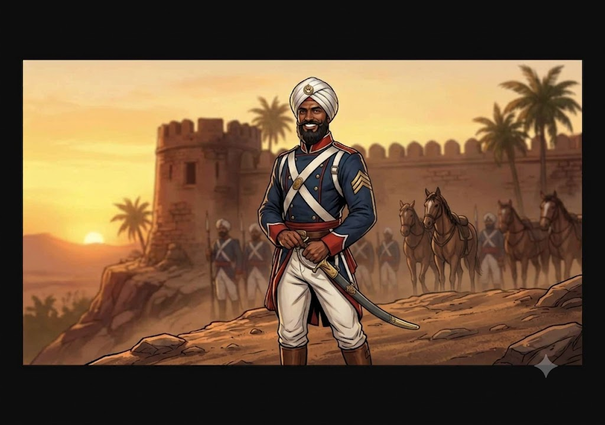

Characteristics
Point assignment method (460 total). Age 30 (20-39 bracket: 1 EDU improvement check, rolled successfully, +5 to EDU).
| Characteristic | Regular | Half | Fifth |
|---|---|---|---|
| STR | 70 | 35 | 14 |
| CON | 55 | 27 | 11 |
| SIZ | 55 | 27 | 11 |
| DEX | 65 | 32 | 13 |
| INT | 65 | 32 | 13 |
| POW | 50 | 25 | 10 |
| APP | 50 | 25 | 10 |
| EDU | 55 | 27 | 11 |
Derived
| Attribute | Max | Current |
|---|---|---|
| HP | 11 | 11 |
| MP | 10 | 10 |
| Luck | — | 50 |
| Sanity | 50 | 50 |
Reputation
| Attribute | Value |
|---|---|
| Starting Reputation | 15 |
| Current Reputation | 15 |
| Censure | 0 |
Combat
| Attribute | Value |
|---|---|
| Move | 9 |
| Build | +1 |
| Damage Bonus | +1D4 |
| Dodge (Regular) | 32 |
| Dodge (Half) | 16 |
| Dodge (Fifth) | 6 |
Status
- [ ] Temporary Insanity
- [ ] Indefinite Insanity
- [ ] Major Wound
- [ ] Unconscious
- [ ] Dying
Personal Description: Lean and hard-muscled, with dark skin weathered by years of field service. A lush black beard frames his jaw, and his moustache is luxuriant, carefully groomed, the pride of a man who takes his appearance seriously. His uniform is immaculate. His bearing is military to the bone: straight back, steady hands, eyes that rest easily on whoever is speaking. When he smiles, which is often, it is wide and toothy, brilliant white teeth shining through the darkness of the beard. The smile is the thing people remember. He moves with the unhurried economy of a man who is never in a rush and never late.
Traits: Patient. He can wait for weeks. He anticipates needs and solves problems before they become problems, because that is how you become invisible. He speaks softly and listens carefully. He defers to authority with practised ease but never grovels. He is calm under pressure and calm under calm. The stillness is not performance. He is genuinely at peace.
Ideology & Beliefs: Kali demands service. The rumaal is a sacrament. Death given in her name is prayer, not murder. He is devout. He is not conflicted. He does not enjoy killing and he does not shrink from it. It is duty, performed with the same quiet care as any other duty.
Significant People:
- Acharya_Devendra_Ghosh — Spiritual authority. The man who showed him the path. Pratap does not question Ghosh’s orders. He trusts them as a priest’s guidance.
- The real Pratap Singh (dead) — The man whose name, habits, and life he has worn for eight months. He studied this man carefully. He does not think about him unless he has to.
Meaningful Locations:
- The temple at Baranagar — Kali’s house. Where Ghosh holds court. Where the path leads.
- The 67th BNI barracks at Fort William — his cover, his daily life, the place where he is most visible and most invisible simultaneously.
Treasured Possessions:
- The rumaal — a length of yellow silk, weighted at the corners with silver coins. Consecrated. It is not a weapon. It is a prayer cord. He keeps it folded inside his sash, against his skin.
- A small carved figure of Kali, hidden among personal effects. Black stone, palm-sized, worn smooth by handling.
Occupation: Custom — Sepoy / Military Impostor Formula: EDU × 2 + STR × 2 = 110 + 140 = 250 occupation points Personal Interest: INT × 2 = 130 points
| Skill | Base | Regular | Half | Fifth | Source |
|---|---|---|---|---|---|
| Climb | 20 | 30 | 15 | 6 | PI |
| Cthulhu Mythos | 00 | 00 | 00 | 00 | — |
| Dodge | — | 32 | 16 | 6 | Base only |
| Etiquette | 15 | 15 | 7 | 3 | Base only |
| Fast Talk | 05 | 05 | 02 | 01 | Base only |
| Fighting (Brawl) | 25 | 65 | 32 | 13 | Occ (+40) |
| Fighting (Tulwar) | 01 | 36 | 18 | 7 | PI (+35) |
| Firearms (Rifle/Musket) | 25 | 55 | 27 | 11 | Occ (+30) |
| First Aid | 30 | 45 | 22 | 9 | Occ (+15) |
| Intimidate | 15 | 20 | 10 | 4 | PI (+5) |
| Language (Hindoostani, Own) | 55 | 55 | 27 | 11 | EDU |
| Language (English) | 01 | 50 | 25 | 10 | Occ (+49) |
| Listen | 20 | 40 | 20 | 8 | PI (+20) |
| Navigate | 10 | 25 | 12 | 5 | PI (+15) |
| Persuade | 10 | 40 | 20 | 8 | Occ (+30) |
| Psychology | 10 | 35 | 17 | 7 | PI (+25) |
| Ride | 05 | 20 | 10 | 4 | PI (+15) |
| Religion | 05 | 05 | 02 | 01 | Base only |
| Spot Hidden | 25 | 55 | 27 | 11 | Occ (+30) |
| Stealth | 20 | 65 | 32 | 13 | Occ (+45) |
| Survival (Wilderness) | 10 | 10 | 05 | 02 | Base only |
| Track | 10 | 10 | 05 | 02 | Base only |
| Credit Rating | 00 | 11 | 05 | 02 | Occ (+11) |
Occupation points spent: 40 + 30 + 45 + 30 + 15 + 49 + 30 + 11 = 250 ✓ Personal interest spent: 10 + 35 + 20 + 5 + 15 + 25 + 15 = 130 (remaining 5 unspent) ✓
None at character creation.
None at character creation. His devotion to Kali is religious conviction, not mania.
None. Cthulhu Mythos 0%. Pratap is a Thuggee operative, not a Mythos cultist. He believes in Kali, not in cosmic dissolution. Ghosh has not shared the cosmic truth with his enforcers.
None prior to meeting the investigators. The Thuggee arm of the Laya_Sampradaya does the killing and the watching. They are not told what happens in the inner sanctum of the temple.
| Weapon | Skill % | Damage | Attacks | Range | Ammo | Malf |
|---|---|---|---|---|---|---|
| Unarmed (Brawl) | 65/32/13 | 1D3+1D4 | 1 | — | — | — |
| Rumaal (Grapple) | 65/32/13 | Special | 1 | Touch | — | — |
| Tulwar | 36/18/7 | 1D8+1D4 | 1 | — | — | — |
| Brown Bess Musket | 55/27/11 | 1D10+4 | 1/3 | 100 yds | 1 | 95 |
| Knife | 65/32/13 | 1D4+1D4 | 1 | — | — | — |
Rumaal (strangulation cord): Initiates as a grapple attack using Fighting (Brawl). On success, the cord is around the target’s throat. Each subsequent round: opposed STR (Pratap’s STR 70 vs target). If the target fails to break free, they take 1D6 damage and begin suffocating. Strangulation is quiet. Unless the target breaks free and shouts, nobody hears.
To be populated when the party reaches Calcutta. Pratap will be assigned to them as an escort by Charles_Ashworth. He will know their names and purpose before they know his.
Pratap Singh is not his real name. It is the name of the man he killed and replaced eight months ago. The real Pratap Singh was a genuine havildar in the 67th Bengal Native Infantry — well-liked, competent, with clean records. The impostor studied the man’s habits, relationships, service history, and handwriting well enough to pass casual inspection. He has been in place for eight months.
He was assigned to the investigators as a guide and liaison on Ashworth’s recommendation. Ashworth considers this a routine courtesy extended to visiting Britons of standing. He has no idea what he assigned.
Orders from Ghosh, delivered through a chain of contacts in the city:
- Report everything. Who they talk to, where they go, what they ask about. If they meet allies while Pratap is present, those allies are immediately compromised.
- Steer subtly. A “helpful” suggestion to visit this temple instead of that one. A route through the city that avoids the ghats where the journalist lives. Never insist. Always defer. Let the helpfulness do the work.
- Wait. Do not act until ordered. The moment of maximum vulnerability has not arrived yet. Patience is devotion.
- When ordered: kill. The most isolated investigator. The one who goes somewhere alone or with Pratap only. The rumaal, from behind, at the worst possible moment. The man who carried their bags trying to kill one of them with the same patient efficiency he brought to everything else.
{Player-facing notes. Protected — skills never modify.}
Relationships
- Serves Acharya Devendra Ghosh — Spiritual authority. Kills because Kali demands it.
- Member of Laya Sampradaya — Thuggee operative. True believer in Kali, not the Canticle.
- Assigned by Charles Ashworth — Ashworth recommended the escort as a courtesy. Has no idea what he assigned.
- Same regiment Valentine Frome — 67th BNI. Frome's journal documents Thuggee killings. The man Frome hunts serves in his own regiment.
Equipment
Military Kit:
- Brown Bess musket (.75 calibre smoothbore, standard issue for sepoys)
- Tulwar (short curved sword, regulation sidearm)
- Bayonet
- Ammunition pouch (20 rounds paper cartridge)
- Military bedroll and canteen
- Havildar’s rank insignia
Concealed:
- The rumaal — yellow silk, weighted with silver coins, folded inside his sash against his skin
- Small carved figure of Kali — hidden in his pack, wrapped in cloth
Wealth:
| Attribute | Value |
|---|---|
| Spending Level | Military NCO (modest) |
| Cash | ~15 rupees (monthly pay) |
| Assets | None under this name |
No story content available.